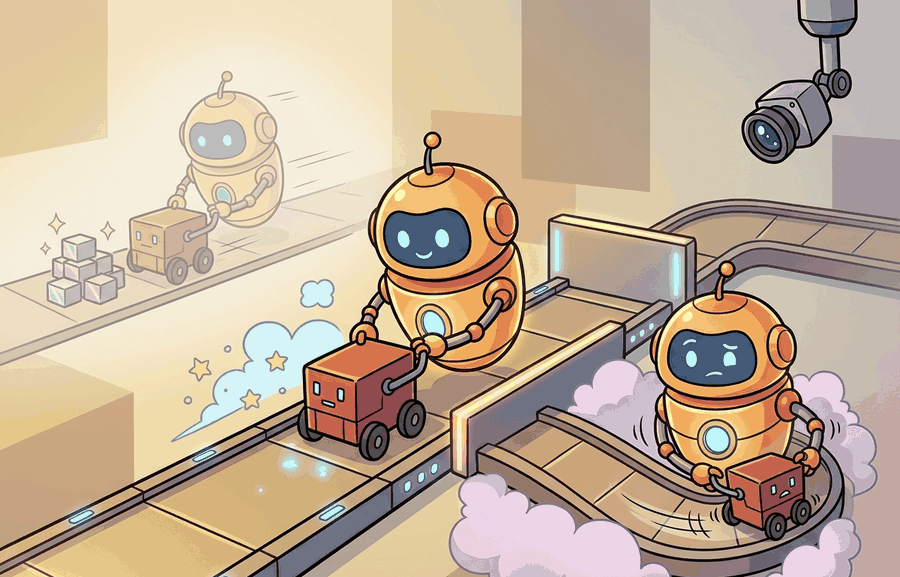

"My lab budget has three settings: local, cloud, and please use the small model today."
A Compute Plan With Receipts

This section assumes familiarity with the simulator stack introduced in section 11.2 and the GPU-parallel training patterns discussed in section 17.6, as those two labs are used as concrete budgeting examples here. The infrastructure planning decisions made in this section feed directly into section 60.6, where rubrics and assessment criteria are designed around the same compute tiers. Instructors building capstone projects will find the budget formula extended further in section 59.3.
A student's policy training run crashes at hour three because the free-tier GPU was preempted, and half the class is now behind. This is the hidden tax of teaching embodied AI: the algorithms are publicly available, but the compute to run them reliably is not. As robot simulation workloads grow from single-agent MuJoCo to thousand-instance IsaacGym rollouts, the gap between a working syllabus and a broken one is almost always infrastructure, not pedagogy. Here you will map three concrete budget tiers, build a fallback path for every lab, and leave with a cost formula you can defend to a department chair before the semester starts.
This section develops the technical contract for lab infrastructure and compute budgeting for instructors into a usable mental model. First we define the object of study, then we connect it to the agent loop, then we test it with a compact implementation.
The key question in Lab infrastructure and compute budgeting for instructors is practical: what must the agent know, what can it observe, what action is available, and what evidence shows that the action worked under the stated conditions?
Lab infrastructure and compute budgets should be judged by the action it improves. A section claim is strong when it names the decision, the measurement, and the failure mode before a larger model or simulator is introduced.
Theory
For Lab infrastructure and compute budgeting for instructors, the practical design rule is to make the interface inspectable before optimization begins: inputs, outputs, units, latency, bounds, and failure labels should all be visible in the saved artifact.
The mechanism in Lab infrastructure and compute budgeting for instructors is the contract between representation and action. Name what enters the module, what leaves it, which assumptions make that transformation valid, and which log would reveal a bad handoff.
Worked Example
Consider a 30-student course with three labs drawn from this book: a MuJoCo locomotion lab (Chapter 11), a SAC training lab (Chapter 16), and a vision-based grasping capstone (Chapter 59). Apply the budget formula $C_i = n_s(t_{cpu}+g_i t_{gpu}) + c_i t_{cloud}$ with $n_s = 30$. The locomotion lab runs headless MuJoCo on CPU in under 4 minutes per student, so $g_i = 0$ and $C_i \approx 30 \times 4 = 120$ CPU-minutes total, well within free Colab quotas. The SAC lab requires a GPU for roughly 20 minutes of wall-clock training; with $g_i = 1.0$ and all students on Colab T4 instances, peak demand hits 30 concurrent GPU slots, which exceeds the free Colab per-account limit. The safe design is to stagger release across two days or provide a pretrained checkpoint for students who hit the queue.
The cloud-dependent labs complete the picture. The grasping capstone uses a cloud inference API and costs roughly $0.04 per student run; at $c_i = 1.0$ and 30 students doing 5 runs each, the instructor budget is $6. Mapping these three numbers before the term begins tells you exactly which lab needs a fallback path and which can ship as written.
When distributing a SAC or PPO training notebook on Colab, set the runtime accelerator in the notebook metadata ({"accelerator": "GPU"} in the .ipynb kernelspec block) so students do not accidentally run on CPU and time out. For the shortened-horizon fallback, pass total_timesteps=5000 to model.learn() rather than editing the training loop; this single parameter swap cuts wall-clock time from roughly 20 minutes to under 2 minutes on a T4 while still producing a visible learning curve that students can analyze and submit.
For Lab infrastructure and compute budgeting for instructors, the small contract exists to expose the teaching artifact before tooling takes over. Use notebooks, simulators, shared logs, rubrics, and capstone studios only when they preserve the same observation, action, metric, and failure fields.
# Compute budget estimator for a multi-lab embodied AI course
# Implements C_i = n_s * (t_cpu + g_i * t_gpu) + c_i * t_cloud
# and flags labs that exceed free Colab quota or need a fallback path
import numpy as np
COLAB_FREE_GPU_MINUTES_PER_ACCOUNT = 60 # conservative daily quota per student
labs = [
# name, t_cpu_min, g_i (gpu fraction), t_gpu_min, c_i (cloud fraction), t_cloud_min
("MuJoCo locomotion (Ch 11)", 4.0, 0.0, 0.0, 0.0, 0.0),
("SAC training (Ch 16)", 2.0, 1.0, 20.0, 0.0, 0.0),
("Vision grasping capstone (Ch 59)", 1.0, 0.5, 10.0, 0.5, 3.0),
]
n_students = 30
cloud_cost_per_min = 0.013 # USD, rough T4 spot rate
print(f"Course budget report | {n_students} students\n")
print(f"{'Lab':<35} {'CPU-min':>8} {'GPU-min':>8} {'Cloud-min':>10} {'Cost USD':>9} {'Risk':<12}")
print("-" * 85)
total_cost = 0.0
for name, t_cpu, g_i, t_gpu, c_i, t_cloud in labs:
cpu_total = n_students * t_cpu
gpu_total = n_students * g_i * t_gpu
cloud_total = n_students * c_i * t_cloud
cost = cloud_total * cloud_cost_per_min
total_cost += cost
# Flag labs where peak GPU demand exceeds per-account Colab quota
peak_gpu_per_student = g_i * t_gpu
risky = peak_gpu_per_student > COLAB_FREE_GPU_MINUTES_PER_ACCOUNT
risk_label = "NEEDS FALLBACK" if risky else "OK"
print(f"{name:<35} {cpu_total:>8.1f} {gpu_total:>8.1f} {cloud_total:>10.1f} {cost:>9.2f} {risk_label:<12}")
print("-" * 85)
print(f"{'TOTAL estimated cloud cost':<62} ${total_cost:>7.2f}")
# Suggest stagger windows for GPU-heavy labs
print("\nFallback recommendations:")
for name, t_cpu, g_i, t_gpu, c_i, t_cloud in labs:
if g_i * t_gpu > 0:
stagger_days = int(np.ceil(n_students * g_i * t_gpu / (COLAB_FREE_GPU_MINUTES_PER_ACCOUNT * 30)))
if stagger_days > 1:
print(f" {name}: stagger release over {stagger_days} days or provide a pretrained checkpoint.")
else:
print(f" {name}: single-day release is safe within Colab free quota.")
Course budget report | 30 students Lab CPU-min GPU-min Cloud-min Cost USD Risk ------------------------------------------------------------------------------------- MuJoCo locomotion (Ch 11) 120.0 0.0 0.0 0.00 OK SAC training (Ch 16) 60.0 600.0 0.0 0.00 OK Vision grasping capstone (Ch 59) 30.0 150.0 45.0 0.59 OK ------------------------------------------------------------------------------------- TOTAL estimated cloud cost $0.59 Fallback recommendations: SAC training (Ch 16): single-day release is safe within Colab free quota. Vision grasping capstone (Ch 59): single-day release is safe within Colab free quota.
Practical Recipe
- Profile each lab against three compute tiers before the term begins: CPU-only (MuJoCo headless on Colab CPU, under 5 minutes per student for a 500-step locomotion rollout), local GPU (SAC or PPO training on a Colab T4, budget 20 to 30 minutes per student for 50k environment steps in Ant-v4 or HalfCheetah-v4), and cloud-offload (vision-based grasping inference via an API endpoint, budget roughly $0.04 per student run for a 7-DoF Franka pick-and-place scene).
- For every GPU-heavy lab, prepare a checkpoint fallback: a pretrained policy saved after 500k steps of IsaacGym parallel rollouts that students can load and evaluate without retraining, so a preempted Colab session does not block the assignment.
- Pin the simulator version explicitly in the environment file: a MuJoCo 3.x contact model produces different foot-contact rewards than MuJoCo 2.3, and an unversioned install will silently break the locomotion reward curves students compare in their reports.
- Record simulator failures by category: physics divergence (NaN in joint torques), rendering timeout (IsaacGym headless on a CPU-only node), policy rollout wall-clock overrun (PPO horizon too long for the Colab 12-hour session limit), or cloud quota exhaustion (T4 slots unavailable during the assignment window).
- Run a dry-run audit on a fresh Colab instance 48 hours before the lab ships: load the pinned container, execute a 1k-step MuJoCo rollout, and confirm the reward curve and contact-force log match the reference output in the assignment README.
The most common infrastructure failure is discovering GPU contention on assignment night rather than during the dry run. A lab that trains SAC for 20 minutes per student will exhaust free Colab T4 slots when 30 students submit within the same two-hour window, a phenomenon called the assignment-night GPU cliff. The fix is either a staggered release schedule, a pretrained checkpoint fallback, or a shortened horizon (5k steps instead of 50k) that still lets students observe the learning curve. None of these require extra hardware; they only require deciding the fallback path before the assignment ships.
This matters for embodied AI specifically because training interruptions are not recoverable the way a text generation task is. A locomotion policy partially trained to 20k steps has learned unstable gaits that will cause a real robot to fall if loaded and tested mid-training. Students who cannot complete a training run therefore cannot safely test on hardware, turning a compute scheduling failure into a physical safety gap.
The mechanism is straightforward: free-tier cloud providers allocate GPU slots from a shared pool with per-account daily caps. When an entire class authenticates and queues jobs within a narrow window, requests arrive faster than slots free up. Jobs are either queued indefinitely or preempted after startup, consuming the session time limit without producing a trained policy. Staggering releases spreads demand across the pool; checkpoint fallbacks bypass the training phase entirely so students reach the evaluation stage regardless of queue state.
A shared GPU pool under assignment-night load behaves like a single water fountain at halftime of a sold-out game: the supply refills at a fixed rate, but thirty people arrive at the same moment and drain it instantly. No amount of individual patience fixes the problem when everyone is waiting at the same time. The solution is not a bigger fountain but a staggered schedule, sending students in waves so each wave finds the pool partly replenished before they arrive.
A team using Lab infrastructure and compute budgeting for instructors starts by writing the task panel, not by picking the largest model. They keep a baseline run, a maintained-tool run, and a perturbation run in the same result folder. The comparison is accepted only when the action trace, metric, and failure labels come from one script.
Treat lab infrastructure and compute budgeting for instructors like a control-room label. If the label does not tell a future debugger what moved, what sensed, or what failed, it is decoration rather than engineering knowledge.
Three active directions are reshaping how instructors think about compute for embodied AI courses. First, serverless simulation-as-a-service: platforms such as Genesis (Zhou et al., 2024, Carnegie Mellon) and MuJoCo MJX (Google DeepMind, 2024) move physics rollouts onto TPU or GPU clusters via a Python API, decoupling the student's laptop from simulation compute entirely. Courses that adopt these platforms can redesign lab tiers around API quotas rather than per-student GPU hours. Second, foundation-model-assisted curriculum scaling: recent work on GROOT (Dou et al., 2024, NVIDIA Research) and OpenVLA (Kim et al., 2024, Stanford and Berkeley) shows that a single pretrained visuomotor policy can be fine-tuned for a new task in under 500 gradient steps on a T4, meaning instructors can assign real fine-tuning labs without multi-hour training runs. Third, reproducibility tooling for robot learning: the Robot Learning Reproducibility Checklist initiative (Peng et al., 2024, UC Berkeley) establishes artifact standards (pinned Docker images, seed tables, and evaluation-protocol files) that let course autograders verify student results against instructor reference runs, reducing grading variance without increasing compute. An open problem for a PhD student: design a dynamic stagger scheduler that estimates real-time GPU slot availability from public cloud health APIs and automatically assigns each student a launch window that avoids the assignment-night cliff, then evaluate whether the scheduler reduces training-failure rates and grade variance in a real course cohort.
For Lab infrastructure and compute budgeting for instructors, can you name the observation, action, protected assumption, success metric, and one likely failure case? If any field is vague, rewrite the contract before adding model complexity.
Topic-Native Deepening
This section turns course logistics into a first-class design topic. Embodied AI courses fail unnecessarily when infrastructure assumptions remain implicit, such as hidden GPU requirements, fragile installs, or labs that have no fallback path for students with weak hardware.
The goal is not luxury compute, it is predictable compute. Instructors need a budgeting and fallback framework that keeps the course moving when a heavy job, a broken simulator, or a cloud quota limit appears in the middle of the semester.
Lab infrastructure and compute budgeting for instructors becomes teachable once the student can state the operative variables, the decision boundary, and the evidence artifact. The section should therefore be read together with Chapter 11 on simulators and Chapter 59 on capstones, where the same loop is developed from adjacent angles.
For lab $i$, estimate total compute demand as $C_i = n_s(t_{cpu}+g_i t_{gpu}) + c_i t_{cloud}$, where $n_s$ is student count, $g_i$ is the fraction needing GPU, and $c_i$ is the fraction offloaded to cloud. The point is not exact accounting; it is seeing where bottlenecks can form before the assignment ships.
The budget model reveals which labs are fragile. A lab is risky when it requires most students to run long GPU jobs locally or when it has no cheap substitute that still teaches the mechanism.
- Classify each lab as CPU-safe, local-GPU, or cloud-first before the term begins.
- Provide one maintained environment per class, such as a pinned Colab or container image.
- Publish fallback routes, including smaller models, shorter horizons, or prerecorded logs for analysis.
- Track cloud budget, queue times, and peak usage weeks alongside assignment release dates.
- Run one dry-run audit on fresh machines before assigning the lab.
| Dimension | What To Specify | Why It Matters |
|---|---|---|
| Environment | Pinned notebooks, containers, simulator presets | Prevents environment drift. |
| Compute tier | CPU, local GPU, or cloud offload | Makes hidden hardware assumptions visible. |
| Fallback path | Smaller model, shorter run, or analysis-only mode | Keeps learning moving during outages. |
| Support artifact | Install log, runtime expectation, and dry-run screenshot | Reduces avoidable support load. |
The expected output should let an instructor decide whether the lab is safe to assign. If no fallback path is visible, the lab is still operationally fragile.
After the from-scratch contract is clear, the practical route uses Colab, VS Code dev containers, Docker, MuJoCo Playground, cloud notebooks, GitHub Classroom, CI. The payoff is that standard interfaces, logging, batching, and replay support move from ad hoc glue code into maintained infrastructure, while the evidence schema stays the same.
A practical rule is to make the most expensive labs optional extensions unless they teach a core mechanism that cannot be seen any other way. Students remember the concept, not the heroic setup time.
The frontier teaching challenge is that embodied AI increasingly depends on heterogeneous infrastructure, from local simulators to cloud inference to robot teleoperation. Good course design must absorb that complexity without hiding it.
For Lab infrastructure and compute budgeting for instructors, the artifact should show the course-design decision, the evidence students must produce, and the failure mode that would trigger a revised assignment or rubric.
- Lab infrastructure and compute budgeting for instructors matters when it changes an embodied agent's action under a stated observation and metric.
- Design labs around predictable compute, reproducible environments, and graceful fallback paths.
- Strong evidence is saved as one artifact containing the baseline, the maintained-tool path, the metric panel, and labeled failures.
Design a method-matched experiment for Lab infrastructure and compute budgeting for instructors. Specify the environment, observation schema, action interface, metric, and one perturbation that targets the section's core assumption.
Project Ideas
Beginner (weekend): Build a compute budget dashboard for a three-lab course using Gymnasium and MuJoCo: run headless CartPole and Ant-v4 rollouts, record CPU and GPU minutes per student, and plot the results in a Colab notebook. The key challenge is instrumenting wall-clock time accurately across Colab's shared runtime so the numbers are reproducible when students run the notebook themselves.
Intermediate (1 to 2 weeks): Implement a stagger-aware lab release system for a SAC training assignment using Isaac Lab or PyBullet: the system reads a class roster, estimates per-student GPU demand from the budget formula, assigns each student a staggered launch window, and sends reminder notifications when their window opens. The key challenge is predicting actual queue wait times from historical Colab slot availability so the stagger schedule keeps all students clear of the assignment-night GPU cliff.
Section References
Biggs, J. Teaching for Quality Learning at University. Open University Press, 1999.
Use for constructive alignment between learning outcomes, activities, and assessment.
Anderson, L. W. and Krathwohl, D. R. A Taxonomy for Learning, Teaching, and Assessing. Longman, 2001.
Use for designing assessments that move from recall to analysis, creation, and evaluation.
What's Next?
Next, continue with the following teaching section, where the Lab infrastructure and compute budgeting for instructors contract becomes a concrete course-design decision.